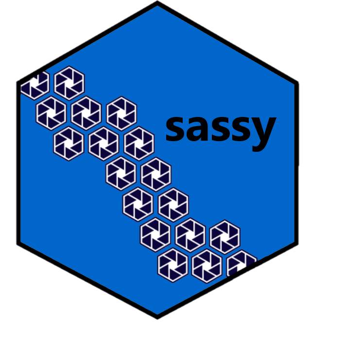

For SAS® programmers, encountering R for the first time can be quite a shock.
- Where is the log?
- Where are my datasets?
- How do I do a data step?
- How do I create a format?
- How do I create a report?
All these basic concepts that were so familiar and easy for you are suddenly gone. How can R possibly be a replacement for SAS®, when it can’t even create a decent log!
If you are in this state of shock, or have asked yourself any of the above questions, then the sassy system is for you!
The sassy system was designed to make data preparation and reporting in R easier for everyone, but especially for SAS® programmers. The system brings many useful SAS® concepts to R. With the sassy system you can:
- Create a libname
- Create a format catalog
- Do a data step
- Generate frequency and summary statistics
- Write a report in a few lines of code
- And more!
And all of the above activities can be recorded in a traceable log!
The sassy system totally changes the flow of the typical R script. It greatly simplifies the script, significantly reduces the number of lines of code, and generally makes the flow more similar to a SAS® program.
Installation
The sassy meta-package is published on CRAN. You can install it with the following console command:
Then put the following line at the top of your script:
The above commands will install and load a set of packages that will allow you to think about programming in R very much the same way you thought about programming in SAS®.
It is not identical to SAS®. R is, after all, a very different language. R is functional, vector-based, and runs entirely in memory. As a result, the syntax of sassy functions will be different than their corresponding SAS® functions.
The sassy functions will, however, have a similar feel. Overall, you will find programming with the sassy system much more comfortable than programming in Base R or tidyverse alone.
Next Steps
Next, you should read the Get started page, and look at some examples. From these pages, you will be able to link into each of the packages included in the sassy system, and explore them in depth.
Have fun!
Getting Help
If you need help with the sassy family of packages, the best place to turn to is the r-sassy web site.
This web site offers many examples, and full documentation on every function.
If you want to look at the code for the sassy package, visit the github page here.
If you encounter a bug or have a feature request, please submit an issue here.